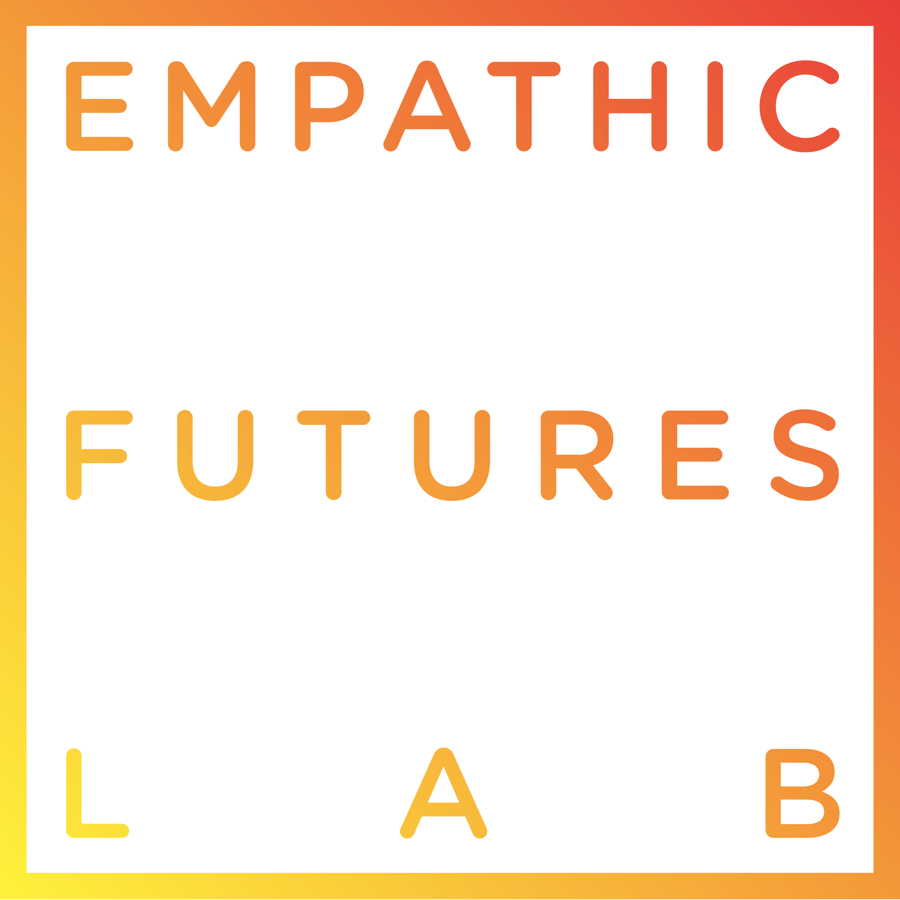

 EFL Podcast The Podcast about human focused Futures for the environment in which we live. Empathic Futures Lab
Woodward_Design My personal portfolio site with all of my Architecture work during undergrad and grad school at UIUC Christopher Woodward